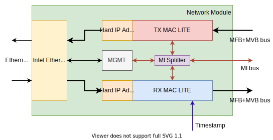

Network module
Network module enables connection of the NDK platform to an Ethernet interface(s). The basic architecture is displayed below.
{kind=link}
The Network module utilizes Ethernet hard IP blocks of the FPGA (Stratix 10 or Agilex) to implement functions of the Ethernet sublayers. These hard IP blocks have their unique client interface, which means that to connect them to the NDK platform, the client interface has to be converted to/from MFB. That is the purpose of the Hard IP adapters. The TX and RX mac lites implement some of the functions of the MAC sublayer. However, their main feature is the ability to buffer receiving/transmitting frames and to provide a backpressure signal for the adjecent component (on the NDK side).
The whole Network module (like the rest of the NDK) can be controlled by software. There are CSR registers in the MAC lites and in the hard IPs that can be accessed over the MI bus. SW access is described in the following sections:
So this was a simple description of the key building blocks of the Network module. In reality, the Network module is much more generic. A diagram with a more implementation-based look follows.

Different hard IPs (with differently set parameters) are instantiated for different Ethernet speeds (200 GE, 25 GE, …) and number of Ethernet channels (1, 4, …). Available configurations are listed down here. Another parameter that is available to the user is the number of ports (Ethernet interfaces of the NIC). Both of the previous diagrams illustrate a scenario with a single port. For a multi-port scenario, you can just imagine every block in the diagram above N times (Where N is the number of ports), with the exception of the QSFP control and the MI splitting logic (which is a virtual block described below).
Network module core
The so-called Network module core is a subcomponent of the Network module containing the required hard IP (I’ll get into that in a sec), appropriate adapters and an MI component for the communication with the reconfiguration interfaces of the hard IP. Right now, the Network module can use two different Ethernet hard IPs, the E-tile and the F-Tile. According to the selected NIC (and therefore the type of hard IP), the proper architecture of the Network module core (with the proper hard IP) is used. It is connected directly to the serial (QSFP) pins of the FPGA. On the other (right) side, it is connected to the TX and RX MAC lites over MFB and to MI interconnect. Both architectures of the Network module core are displayed below.

|

|
They both contain the same parts, just in a slightly different form. The E-Tile hard IP core is always just one instance, no matter how many Ethernet channels there are or what their speed is. The F-Tile hard IP core is instantiated once per each Ethernet channel. Each one contains a certain amount (8/Channels) of QSFP transceivers, which means that the QSFP RX and TX signals (as well as XCVR reconfiguration signals) are distributed accordingly. There is a pair of adapters for each channel. E-tile’s client interface is the Avalon Streaming (AVST) interface, F-tile can also utilize the AVST interface (for speeds up to 100 GE) or the MAC segmented interface (for all supported speeds). F-tile hard IP cores always utilize the MAC segmented interface in our designs.
SW access to the reconfiguration interfaces
Software access is provided via the MI indirect access component. This component’s main task is to preserve address space of the MI bus, as the reconfiguration interfaces take up a huge amount of it. A desription of the MI indirect access (and how it should be operated) is specified here. Now, to set the ID of the output interface, you must determine the number of Ethernet channels there is and in case of E-tile also whether RS-FEC is utilized (false only in the case of 4x10GE). The first few output interfaces of the MI indirect access are connected to the Ethernet reconfiguration interfaces. The following few interfaces are connected to the transceiver (XCVR) reconfiguration interfaces (there are 4 in the E-tile architecture and 8 in the F-tile architecture). The last output interface is for reconfiguration of the RS-FEC, but only in the case of E-tile architecture. The RS-FEC reconfiguration interface is a part of the Ethernet reconfiguration interface in the case of F-tile architecture. The addresses of the available CSR registers in these interfaces are documented in the following documents from Intel.
MAC lites
The Network module core is connected to TX and RX MAC lites. There is one MAC lite pair (TX + RX) for each Ethernet channel and they are connected one-on-one to apropriate adapters located in the Network module core. On the other side, TX MAC lites receive data from the MFB splitter which splits the incomming stream of MFB data into channels. RX MAC lites then feed the inputs of the MFB merger which merges the MFB data into one output stream.
MAC lites split the whole Network module into two clock domains. In the current setting, the clock signal in the left clock domain has twice the frequency of the clock signal in the right clock domain. That is because we want to avoid timing problems further in our designs. To achieve the same throughput in both clock domains, the width of MFB bus is doubled in the slower clock domain (the one on the right).
SW access to the MAC lites
The MI splitting logic block shown in the diagram below is a virtual block that exists only for the purpose of explanation of the Network module (it ain’t a real component). There are more MAC lites than in the previous diagram of the Network module, because it aims to explain addressing even for multi-port configurations. The diagrams above always considered only one port.

The dotted lines and objects represent connections and components that would be there in multi-port configurations. You can ignore those for the moment. Notice that there are two MI buses (MI_PHY and MI) and both lead to their own splitter and from there to different components.
MI_PHY is used for communication with the QSFP control unit (used to control the QSFP transceivers of the NIC over the I2C bus) and the Network module core(s), respectively the MI indirect access components as was mentioned previously (here). The QSFP control unit and each Network module core have the same address offset: 0x00001000. The QSFP control unit is connected to the first output of the MI splitter (PHY) as its base address is 0. The address range for the QSFP control unit is then 0x00000000 - 0x00000FFF. The network module cores follow in the same fashion, the first instance (Network module core (0)) is connected to the second output of the MI splitter (PHY) and its base address is 0x0001000 (=> address range 0x00001000 - 0x00001FFF). The second instance (Network module core (1)) is connected to the third output of the MI splitter (PHY) and its base address is 0x0002000 (=> address range 0x00002000 - 0x00002FFF) and so on via table 1.
Note
To get a complete address of a register in one of the components of the Network module, you must also add the base address of the Network module (defined here) as well as the address of the target register in that component.
Output ID |
Target component |
Address range |
|---|---|---|
0 |
QSFP control |
0x0000 - 0x0FFF |
1 |
Network module core (0) |
0x1000 - 0x1FFF |
2 |
Network module core (1) |
0x2000 - 0x2FFF |
… |
… |
… |
N |
Network module core (N-1) |
(0x1000 + (N-1)*0x1000) - (0x1000 + N*0x1000 - 1) |
The (other) MI bus is used to communicate with all MAC lites. The diagram abovee tries to illustrate which output port of the MI splitter is connected to which MAC lite. In a MAC lite pair (TX + RX), TX MAC lite always comes first - is connected to output with lower ID. Corresponding RX MAC lite (of the same port and of the same channel) comes after the TX MAC lite - is connected to output with ID increased by 1. That means a MAC lite pair is always connected to adjecent output ports of the MI splitter. The first MAC lite pair (which belongs to channel 0 of port 0) takes the first two outputs. If there are multiple channels, the following two outputs are connected to the second MAC lite pair, which belongs to channel 1 of port 0. MAC lite pairs for the following channels of port 0 are conected subsequently in the same way. The following outputs are connected to MAC lite pairs of all channels for port 1 and so on. Each MAC lite in one port is offset by 0x200, MAC lites in different ports are additionally offset by 0x2000 (enough for 8 Ethernet channels as follows from example in table 2). There is an example for configuration 4x25GE with 2 ports. Notation: TX_MAC_LITE(port_id)(channel_id), RX_MAC_LITE(port_id)(channel_id).
Output ID |
Target component |
Address range |
|---|---|---|
0 |
TX_MAC_LITE(0)(0) |
0x0000 - 0x01FF |
1 |
RX_MAC_LITE(0)(0) |
0x0200 - 0x03FF |
2 |
TX_MAC_LITE(0)(1) |
0x0400 - 0x05FF |
3 |
RX_MAC_LITE(0)(1) |
0x0600 - 0x07FF |
4 |
TX_MAC_LITE(0)(2) |
0x0800 - 0x09FF |
5 |
RX_MAC_LITE(0)(2) |
0x0A00 - 0x0BFF |
6 |
TX_MAC_LITE(0)(3) |
0x0C00 - 0x0DFF |
7 |
RX_MAC_LITE(0)(3) |
0x0E00 - 0x0FFF |
8 |
TX_MAC_LITE(1)(0) |
0x2000 - 0x21FF |
9 |
RX_MAC_LITE(1)(0) |
0x2200 - 0x23FF |
10 |
TX_MAC_LITE(1)(1) |
0x2400 - 0x25FF |
11 |
RX_MAC_LITE(1)(1) |
0x2600 - 0x27FF |
12 |
TX_MAC_LITE(1)(2) |
0x2800 - 0x29FF |
13 |
RX_MAC_LITE(1)(2) |
0x2A00 - 0x2BFF |
14 |
TX_MAC_LITE(1)(3) |
0x2C00 - 0x2DFF |
15 |
RX_MAC_LITE(1)(3) |
0x2E00 - 0x2FFF |
Supported Ethernet Hard IP configurations
Notation: NUMBER_OF_CHANNELS x SPEED
E-Tile on Intel Stratix 10 or Agilex FPGA =
1x100GE, 4x25GE, 4x10GEF-Tile on Intel Agilex FPGA =
1x400GE, 2x200GE, 4x100GE, 8x50GE, 2x40GE, 8x25GE, 8x10GE
References